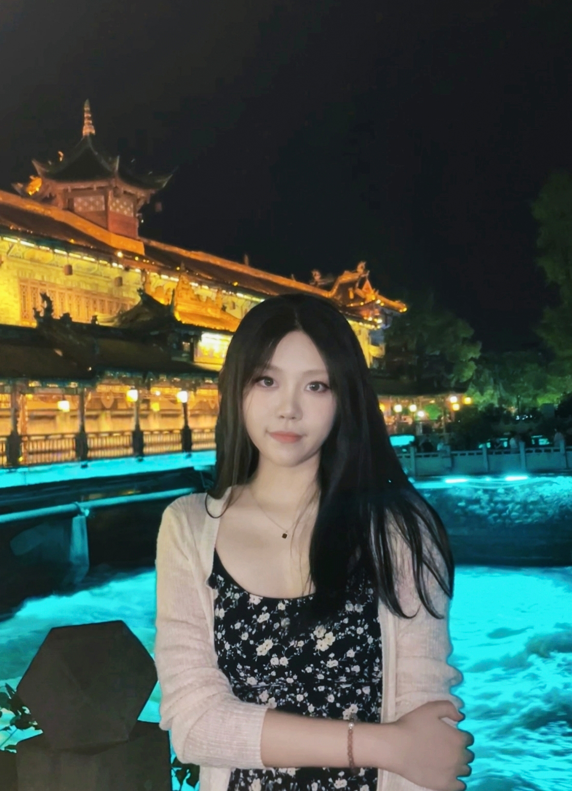
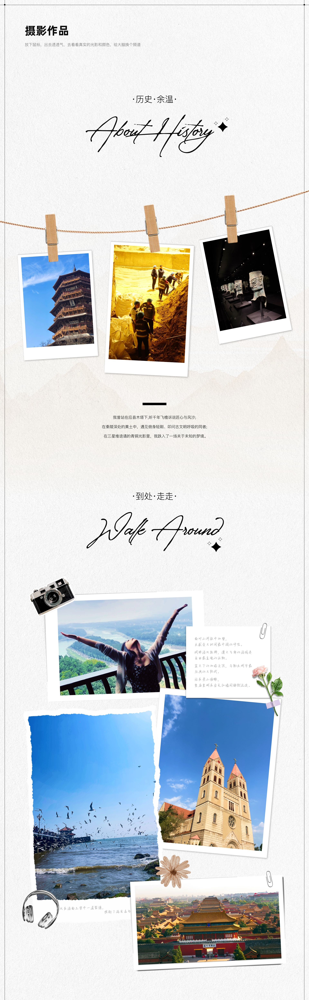

UX / UI Designer
阎坤妤
探索
设计边界
专注于打造具有卓越体验的数字产品，擅长 UI 界面设计、AIGC 辅助设计及动效呈现， 致力于通过创新设计为用户创造价值。

关于我
我是阎坤妤，一名热衷于探索设计可能性的 UX/UI 设计师。毕业于青岛农业大学视觉传达设计专业。
我擅长将用户体验、界面设计与 AIGC 工具相结合，具备严谨的交互逻辑思维，能独立完成从原型图到高保真界面的细节打磨 。熟练掌握 Ps 、Ai 等工具，能结合 Ae 动效设计 提升产品的操作细腻度，并擅长建立高效、通用的设计规范 。
用户体验
界面设计
视觉设计
动效设计
AIGC
运营设计
#Work_Experience
工作经历
2025.04 - 2026.03
棒糖科技(杭州)股份有限公司
UI设计师
- • 全程参与产品规划和创意过程，输出可用设计方案，保证产品具有良好的体验；
- • 参与团队讨论明确设计方向，与产品经理和研发紧密合作，沟通对接，保证 UI 设计在实际中呈现的效果完美；
- • 负责产品视觉风格制定与迭代，完成 UI 相关的界面设计和图标绘制，产出高品质的设计组件，持续优化细节，有效提升团队整体设计能效。
2024.11 - 2025.03
朴朴电子商务有限公司
视觉设计实习
- • 负责完成团队的设计需求及内宣创意设计，包括项目的主 KV、主视觉活动；
- • 参与创意洞察及视觉设计的研究讨论，协助整体品牌视觉形象把控，进行视觉风格定义和活动创新；
- • 参与运营设计体验标准、设计组件规范制定，在实际项目中不断总结，及时沉淀设计方法，构建可复用的设计资产。
项目经历
我的摄影作品
在像素与网格之外，我也热爱生活中的每一个瞬间。

捕捉生活中的光影瞬间，记录不期而遇的美好。通过镜头观察世界，发现平凡生活中的不凡之处。
期待与你
共同创造价值
目前正在寻找新的工作机会，欢迎随时联系。无论是项目合作还是设计交流，我都非常期待。
134-5317-0782
2943398587@qq.com